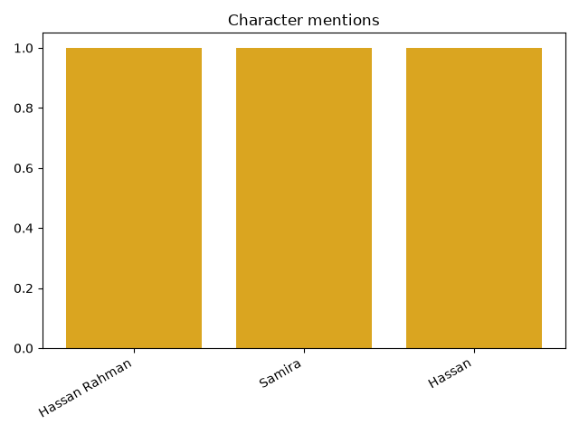
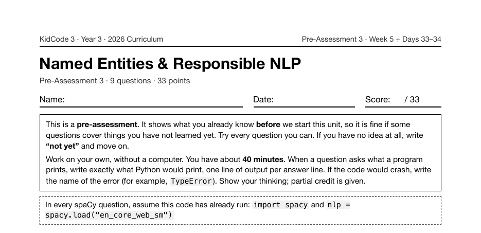

Project 17: Character Tracker
Character Tracker is Project 17, across Days 24 and 25 of Year 3, at the end of the week on named entities: doc.ents, entity labels like PERSON and GPE, and a day spent on why the model is sometimes wrong. Students run a story through spaCy chapter by chapter and count who and where appears.
What I taught that week
From the Year 3 curriculum, Week 5: Named Entity Recognition
Day 21: What Are Named Entities?. Real-world names and facts hiding in text. Using doc.ents, ent.text, ent.label_, and ent.start_char, and decoding PERSON, ORG, GPE, DATE, and MONEY with spacy.explain().
Day 22: Seeing Entities with displaCy. Highlighting entities with displacy.render(doc, style="ent") in a notebook or displacy.serve() in the browser, and saving results as HTML. Lab: "Entity Gallery" of student paragraphs.
Day 23: When the Model Is Wrong. Why models guess: ambiguous names like … "Apple" …, names from many cultures, and text without capital letters. Hand-labeling 20 sentences for an "NER Report Card".
Day 24: Lab: Character Tracker I. Project 4. Loading a public-domain story and running one chapter at a time through nlp. Extracting PERSON and GPE entities and counting them with Counter.
Day 25: Lab: Character Tracker II. Merging name variants like "Dorothy" and "Dorothy Gale", tracking which characters appear in each chapter, and printing a "Who's Who" report. Listing what the tool gets wrong.
What students built
52 students built a tracker. Every one counts PERSON entities chapter by chapter, and 60% also track places (GPE). It is the least-completed project of Year 3.
One student's program
This is one real submission, shown as the student wrote it apart from the removed name header. It was chosen by a fixed rule rather than for being the best: it is the submission closest to the project's median length among those that ran cleanly and contain nothing that could identify anyone. Parts are skipped where marked with …
people = Counter()
places = Counter()
for number, chapter in enumerate(CHAPTERS, start=1):
doc = nlp(chapter)
for ent in doc.ents:
if ent.label_ == "PERSON":
people[ent.text] += 1
elif ent.label_ == "GPE":
places[ent.text] += 1
print(f"Chapter {number}: {len(doc.ents)} entities found")
print()
print("=== Who's Who: The Desert Caravan ===")
for name, count in people.most_common():
print(f" {name}: appears {count} time(s)")
print("Places mentioned:")
for place, count in places.most_common():
print(f" {place}: {count} time(s)")
A sample run of that program (the input was typed for this page)
Chapter 1: 3 entities found Chapter 2: 4 entities found === Who's Who: The Desert Caravan === Hassan Rahman: appears 1 time(s) Samira: appears 1 time(s) Hassan: appears 1 time(s) Places mentioned: Cairo: 1 time(s)

The worksheet for this unit
Each unit has a pre- and post-assessment written from the same curriculum. This is the first page of the pre-assessment for the unit this project sits in: Named Entities & Responsible NLP (Week 5 + Days 33–34, 9 questions).

Where it fits
Named entities are the core of the next two projects: Privacy Shield hides them, and KidBot Brain uses them to work out which city a question is about.
Looking back
The day before this project is about the model's mistakes: ambiguous names, names from many cultures, text without capital letters. A tracker that counts entities is only as good as the entities, and the curriculum asks students to list what their tool gets wrong.